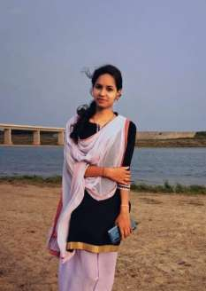

Personal Details
Date of Birth: 28 May, 2000
Place of Birth: Cuttack, Odisha
Height: 5 feet (152 cm)
Marital Status: Single
Education: MBA
Religion: Hindu
Mother Tongue: Odia
Caste: Khandayat
Rashi: Meena (Pisces)
Gotra: Bharadwaja
Family Details
Father: Samir Kumar Das
Occupation: State Govt. Employee (Tahasil)
Mother: Jyotsnarani Das
Occupation: Housewife
Siblings: 1 Brother
Contact Details
Address: Tampada, Madhab, Niali, Cuttack, Odisha – 754004
Mobile: +91 88956 02569